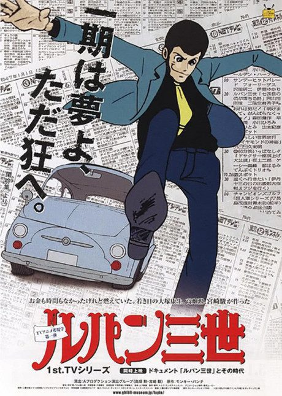

Death Note
デスノート
Light Yagami, a top student, finds a notebook that kills anyone whose name is written in it, and decides to rid the world of criminals.
After the anime, read the manga from Chapter 108.
8.4AniList score
—Animeter, no votes yet
37episodes
Rate it or report where you stopped
Filler
No filler: every episode adapts the manga.
Episodes37
Canon37
Filler0
Mixed0
Sources: Anime Filler Guide
More like Death Note
 Original7.8
Original7.8
 Original8.6
Original8.6
 Manga Ch. 578.0
Manga Ch. 578.0
 Manga Ch. 267.6
Manga Ch. 267.6
 Manga Vol. 27.7
Manga Vol. 27.7
Original6.9
B: The Beginning Manga Ch. 318.1
Manga Ch. 318.1
 Original7.6
Original7.6

Unclear7.4 Original7.4
Original7.4
 Done8.8
Done8.8